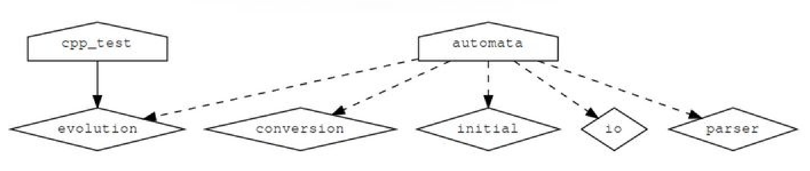

7.7 add_subdirectory的限定范围
NOTE:此示例代码可以在 https://github.com/dev-cafe/cmake-cookbook/tree/v1.0/chapter-7/recipe-07 中找到，其中有一个C++示例。该示例在CMake 3.5版(或更高版本)中是有效的，并且已经在GNU/Linux、macOS和Windows上进行过测试。
本章剩下的示例中，我们将讨论构建项目的策略，并限制变量的范围和副作用，目的是降低代码的复杂性和简化项目的维护。这个示例中，我们将把一个项目分割成几个范围有限的CMakeLists.txt文件，这些文件将使用add_subdirectory命令进行处理。
准备工作
由于我们希望展示和讨论如何构造一个复杂的项目，所以需要一个比“hello world”项目更复杂的例子:
- https://en.wikipedia.org/wiki/Cellular_automaton#Elementary_cellular_automata
- http://mathworld.wolfram.com/ElementaryCellularAutomaton.html
我们的代码将能够计算任何256个基本细胞自动机，例如：规则90 (Wolfram代码):

我们示例代码项目的结构如下:
.
├── CMakeLists.txt
├── external
│ ├── CMakeLists.txt
│ ├── conversion.cpp
│ ├── conversion.hpp
│ └── README.md
├── src
│ ├── CMakeLists.txt
│ ├── evolution
│ │ ├── CMakeLists.txt
│ │ ├── evolution.cpp
│ │ └── evolution.hpp
│ ├── initial
│ │ ├── CMakeLists.txt
│ │ ├── initial.cpp
│ │ └── initial.hpp
│ ├── io
│ │ ├── CMakeLists.txt
│ │ ├── io.cpp
│ │ └── io.hpp
│ ├── main.cpp
│ └── parser
│ ├── CMakeLists.txt
│ ├── parser.cpp
│ └── parser.hpp
└── tests
├── catch.hpp
├── CMakeLists.txt
└── test.cpp
我们将代码分成许多库来模拟真实的大中型项目，可以将源代码组织到库中，然后将库链接到可执行文件中。
主要功能在src/main.cpp中:
#include "conversion.hpp"
#include "evolution.hpp"
#include "initial.hpp"
#include "io.hpp"
#include "parser.hpp"
#include <iostream>
int main(int argc, char *argv[]) {
// parse arguments
int length, num_steps, rule_decimal;
std::tie(length, num_steps, rule_decimal) = parse_arguments(argc, argv);
// print information about parameters
std::cout << "length: " << length << std::endl;
std::cout << "number of steps: " << num_steps << std::endl;
std::cout << "rule: " << rule_decimal << std::endl;
// obtain binary representation for the rule
std::string rule_binary = binary_representation(rule_decimal);
// create initial distribution
std::vector<int> row = initial_distribution(length);
// print initial configuration
print_row(row);
// the system evolves, print each step
for (int step = 0; step < num_steps; step++) {
row = evolve(row, rule_binary);
print_row(row);
}
}
external/conversion.cpp文件包含要从十进制转换为二进制的代码。
我们在这里模拟这段代码是由src外部的“外部”库提供的:
#include "conversion.hpp"
#include <bitset>
#include <string>
std::string binary_representation(const int decimal) {
return std::bitset<8>(decimal).to_string();
}
src/evolution/evolution.cpp文件为一个时限传播系统:
#include "evolution.hpp"
#include <string>
#include <vector>
std::vector<int> evolve(const std::vector<int> row, const std::string rule_binary) {
std::vector<int> result;
for (auto i = 0; i < row.size(); ++i) {
auto left = (i == 0 ? row.size() : i) - 1;
auto center = i;
auto right = (i + 1) % row.size();
auto ancestors = 4 * row[left] + 2 * row[center] + 1 * row[right];
ancestors = 7 - ancestors;
auto new_state = std::stoi(rule_binary.substr(ancestors, 1));
result.push_back(new_state);
}
return result;
}
src/initial/initial.cpp文件，对出进行初始化:
#include "initial.hpp"
#include <vector>
std::vector<int> initial_distribution(const int length) {
// we start with a vector which is zeroed out
std::vector<int> result(length, 0);
// more or less in the middle we place a living cell
result[length / 2] = 1;
return result;
}
src/io/io.cpp文件包含一个函数输出打印行:
#include "io.hpp"
#include <algorithm>
#include <iostream>
#include <vector>
void print_row(const std::vector<int> row) {
std::for_each(row.begin(), row.end(), [](int const &value) {
std::cout << (value == 1 ? '*' : ' ');
});
std::cout << std::endl;
}
src/parser/parser.cpp文件解析命令行输入:
#include "parser.hpp"
#include <cassert>
#include <string>
#include <tuple>
std::tuple<int, int, int> parse_arguments(int argc, char *argv[]) {
assert(argc == 4 && "program called with wrong number of arguments");
auto length = std::stoi(argv[1]);
auto num_steps = std::stoi(argv[2]);
auto rule_decimal = std::stoi(argv[3]);
return std::make_tuple(length, num_steps, rule_decimal);
}
最后，tests/test.cpp包含两个使用Catch2库的单元测试:
#include "evolution.hpp"
// this tells catch to provide a main()
// only do this in one cpp file
#define CATCH_CONFIG_MAIN
#include "catch.hpp"
#include <string>
#include <vector>
TEST_CASE("Apply rule 90", "[rule-90]") {
std::vector<int> row = {0, 1, 0, 1, 0, 1, 0, 1, 0};
std::string rule = "01011010";
std::vector<int> expected_result = {1, 0, 0, 0, 0, 0, 0, 0, 1};
REQUIRE(evolve(row, rule) == expected_result);
}
TEST_CASE("Apply rule 222", "[rule-222]") {
std::vector<int> row = {0, 0, 0, 0, 1, 0, 0, 0, 0};
std::string rule = "11011110";
std::vector<int> expected_result = {0, 0, 0, 1, 1, 1, 0, 0, 0};
REQUIRE(evolve(row, rule) == expected_result);
}
相应的头文件包含函数声明。有人可能会说，对于这个小代码示例，项目包含了太多子目录。请注意，这只是一个项目的简化示例，通常包含每个库的许多源文件，理想情况下，这些文件被放在到单独的目录中。
具体实施
让我们来详细解释一下CMake所需的功能:
-
CMakeLists.txt顶部非常类似于第1节，代码重用与函数和宏:cmake_minimum_required(VERSION 3.5 FATAL_ERROR) project(recipe-07 LANGUAGES CXX) set(CMAKE_CXX_STANDARD 11) set(CMAKE_CXX_EXTENSIONS OFF) set(CMAKE_CXX_STANDARD_REQUIRED ON) include(GNUInstallDirs) set(CMAKE_ARCHIVE_OUTPUT_DIRECTORY ${CMAKE_BINARY_DIR}/${CMAKE_INSTALL_LIBDIR}) set(CMAKE_LIBRARY_OUTPUT_DIRECTORY ${CMAKE_BINARY_DIR}/${CMAKE_INSTALL_LIBDIR}) set(CMAKE_RUNTIME_OUTPUT_DIRECTORY ${CMAKE_BINARY_DIR}/${CMAKE_INSTALL_BINDIR}) # defines targets and sources add_subdirectory(src) # contains an "external" library we will link to add_subdirectory(external) # enable testing and define tests enable_testing() add_subdirectory(tests) -
目标和源在
src/CMakeLists.txt中定义(转换目标除外):add_executable(automata main.cpp) add_subdirectory(evolution) add_subdirectory(initial) add_subdirectory(io) add_subdirectory(parser) target_link_libraries(automata PRIVATE conversion evolution initial io parser ) -
转换库在
external/CMakeLists.txt中定义:add_library(conversion "") target_sources(conversion PRIVATE ${CMAKE_CURRENT_LIST_DIR}/conversion.cpp PUBLIC ${CMAKE_CURRENT_LIST_DIR}/conversion.hpp ) target_include_directories(conversion PUBLIC ${CMAKE_CURRENT_LIST_DIR} ) -
src/CMakeLists.txt文件添加了更多的子目录，这些子目录又包含CMakeLists.txt文件。src/evolution/CMakeLists.txt包含以下内容:add_library(evolution "") target_sources(evolution PRIVATE evolution.cpp PUBLIC ${CMAKE_CURRENT_LIST_DIR}/evolution.hpp ) target_include_directories(evolution PUBLIC ${CMAKE_CURRENT_LIST_DIR} ) -
单元测试在
tests/CMakeLists.txt中注册:add_executable(cpp_test test.cpp) target_link_libraries(cpp_test evolution) add_test( NAME test_evolution COMMAND $<TARGET_FILE:cpp_test> ) -
配置和构建项目产生以下输出:
$ mkdir -p build $ cd build $ cmake .. $ cmake --build . Scanning dependencies of target conversion [ 7%] Building CXX object external/CMakeFiles/conversion.dir/conversion.cpp.o [ 14%] Linking CXX static library ../lib64/libconversion.a [ 14%] Built target conversion Scanning dependencies of target evolution [ 21%] Building CXX object src/evolution/CMakeFiles/evolution.dir/evolution.cpp.o [ 28%] Linking CXX static library ../../lib64/libevolution.a [ 28%] Built target evolution Scanning dependencies of target initial [ 35%] Building CXX object src/initial/CMakeFiles/initial.dir/initial.cpp.o [ 42%] Linking CXX static library ../../lib64/libinitial.a [ 42%] Built target initial Scanning dependencies of target io [ 50%] Building CXX object src/io/CMakeFiles/io.dir/io.cpp.o [ 57%] Linking CXX static library ../../lib64/libio.a [ 57%] Built target io Scanning dependencies of target parser [ 64%] Building CXX object src/parser/CMakeFiles/parser.dir/parser.cpp.o [ 71%] Linking CXX static library ../../lib64/libparser.a [ 71%] Built target parser Scanning dependencies of target automata [ 78%] Building CXX object src/CMakeFiles/automata.dir/main.cpp.o [ 85%] Linking CXX executable ../bin/automata [ 85%] Built target automata Scanning dependencies of target cpp_test [ 92%] Building CXX object tests/CMakeFiles/cpp_test.dir/test.cpp.o [100%] Linking CXX executable ../bin/cpp_test [100%] Built target cpp_test -
最后，运行单元测试:
$ ctest Running tests... Start 1: test_evolution 1/1 Test #1: test_evolution ................... Passed 0.00 sec 100% tests passed, 0 tests failed out of 1
工作原理
我们可以将所有代码放到一个源文件中。不过，每次编辑都需要重新编译。将源文件分割成更小、更易于管理的单元是有意义的。可以将所有源代码都编译成一个库或可执行文件。实际上，项目更喜欢将源代码编译分成更小的、定义良好的库。这样做既是为了本地化和简化依赖项，也是为了简化代码维护。这意味着如在这里所做的那样，由许多库构建一个项目是一种常见的情况。
为了讨论CMake结构，我们可以从定义每个库的单个CMakeLists.txt文件开始，自底向上进行，例如src/evolution/CMakeLists.txt:
add_library(evolution "")
target_sources(evolution
PRIVATE
evolution.cpp
PUBLIC
${CMAKE_CURRENT_LIST_DIR}/evolution.hpp
)
target_include_directories(evolution
PUBLIC
${CMAKE_CURRENT_LIST_DIR}
)
这些单独的CMakeLists.txt文件定义了库。本例中，我们首先使用add_library定义库名，然后定义它的源和包含目录，以及它们的目标可见性：实现文件(evolution.cpp:PRIVATE)，而接口头文件evolution.hpp定义为PUBLIC，因为我们将在main.cpp和test.cpp中访问它。定义尽可能接近代码目标的好处是，对于该库的修改，只需要变更该目录中的文件即可；换句话说，也就是库依赖项被封装。
向上移动一层，库在src/CMakeLists.txt中封装:
add_executable(automata main.cpp)
add_subdirectory(evolution)
add_subdirectory(initial)
add_subdirectory(io)
add_subdirectory(parser)
target_link_libraries(automata
PRIVATE
conversion
evolution
initial
io
parser
)
文件在主CMakeLists.txt中被引用。这意味着使用CMakeLists.txt文件，构建我们的项目。这种方法对于许多项目来说是可用的，并且它可以扩展到更大型的项目，而不需要在目录间的全局变量中包含源文件列表。add_subdirectory方法的另一个好处是它隔离了作用范围，因为子目录中定义的变量在父范围中不能访问。
更多信息
使用add_subdirectory调用树构建项目的一个限制是，CMake不允许将target_link_libraries与定义在当前目录范围之外的目标一起使用。对于本示例来说，这不是问题。在下一个示例中，我们将演示另一种方法，我们不使用add_subdirectory，而是使用module include来组装不同的CMakeLists.txt文件，它允许我们链接到当前目录之外定义的目标。
CMake可以使用Graphviz图形可视化软件(http://www.graphviz.org )生成项目的依赖关系图:
$ cd build
$ cmake --graphviz=example.dot ..
$ dot -T png example.dot -o example.png
生成的图表将显示不同目录下的目标之间的依赖关系:

本书中，我们一直在构建源代码之外的代码，以保持源代码树和构建树是分开的。这是推荐的方式，允许我们使用相同的源代码配置不同的构建(顺序的或并行的，Debug或Release)，而不需要复制源代码，也不需要在源代码树中生成目标文件。使用以下代码片段，可以保护您的项目免受内部构建的影响:
if(${PROJECT_SOURCE_DIR} STREQUAL ${PROJECT_BINARY_DIR})
message(FATAL_ERROR "In-source builds not allowed. Please make a new directory (called a build directory) and run CMake from there.")
endif()
认识到构建结构与源结构类似很有用。示例中，将message打印输出插入到src/CMakeLists.txt中:
message("current binary dir is ${CMAKE_CURRENT_BINARY_DIR}")
在build下构建项目时，我们将看到build/src的打印输出。
在CMake的3.12版本中，OBJECT库是组织大型项目的另一种可行方法。对我们的示例的惟一修改是在库的CMakeLists.txt中。源文件将被编译成目标文件：既不存档到静态库中，也不链接到动态库中。例如：
add_library(io OBJECT "")
target_sources(io
PRIVATE
io.cpp
PUBLIC
${CMAKE_CURRENT_LIST_DIR}/io.hpp
)
target_include_directories(io
PUBLIC
${CMAKE_CURRENT_LIST_DIR}
)
主CMakeLists.txt保持不变:automata可执行目标将这些目标文件链接到最终的可执行文件。使用也有要求需求，例如：在对象库上设置的目录、编译标志和链接库，将被正确地继承。有关CMake 3.12中引入的对象库新特性的更多细节，请参考官方文档: https://cmake.org/cmake/help/v3.12/manual/cmake-buildsystem.7.html#object-libraries